Current Affairs — July 2026 · Class 4
Class 4 of the July 2026 monthly series (Ashish Gautam, Adda247) · 26 topics, grouped by exam category.
- Read once with Recall mode off. Hover over (or tap) any dotted name to see its static GK.
- Turn Recall mode on: the key facts are hidden. Say each one before you click to reveal it.
- Take the self-test at the end. Revise again tomorrow, in a week and in a month, using only the Rapid Revision box after that.
1Banking & Insurance

🎯 Likely QRBIRBIReserve Bank of IndiaEst. 1 April 1935 (RBI Act 1934)Nationalised 1949HQ Mumbai revises Integrated Ombudsman Scheme (RB-IOS), 2026
- No limit on the amount of dispute a complainant can bring to the RBI Ombudsman.
- Compensation for consequential financial loss: up to ₹30 lakh.
- Plus up to ₹3 lakh for loss of time, expenses, and harassment/mental anguish.
- Covers banks, NBFCs, non-bank PPI issuers and Credit Information Companies; in force from 1 July 2026.
🏦 BankingSBI to buy NHBNHBNational Housing BankEst. 1988HQ New DelhiRegulates and refinances housing finance companies's 10% stake in RDCL
- RDCL = RMBS Development Company Ltd — market intermediary for Residential Mortgage-Backed Securities; incorporated 2024, paid-up capital ₹500 crore.
- NHB's stake falls from 39% to 29%.
- Other holders: LIC 10%; HDFC Bank, ICICI Bank, Bajaj Finance 7% each; six housing finance companies 5% each.
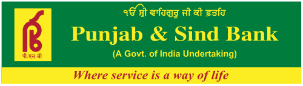
🏦 BankingPunjab & Sind BankPunjab & Sind BankFounded 24 June 1908HQ New Delhi gets IFSCA IFSCAInternational Financial Services Centres AuthorityEst. 2020HQ GIFT City, GandhinagarUnified regulator for IFSCs licence for an IBU at GIFT City
IFSCAInternational Financial Services Centres AuthorityEst. 2020HQ GIFT City, GandhinagarUnified regulator for IFSCs licence for an IBU at GIFT City GIFT CityGujarat International Finance Tec-CityNear Gandhinagar, GujaratIndia's first IFSCRegulated by IFSCA
GIFT CityGujarat International Finance Tec-CityNear Gandhinagar, GujaratIndia's first IFSCRegulated by IFSCA
- Licence from IFSCA to set up an IFSC Banking Unit (IBU) at GIFT City, Gandhinagar.
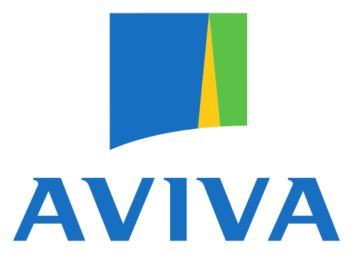
🎯 Likely QAviva to become the first foreign insurer with 100% ownership in India
- British insurer Aviva buys the remaining 26% of Aviva Life Insurance India from Dabur Invest Corp.
- Follows the Government's decision to allow 100% FDI in insurance (earlier limit 74%).
2Growth Forecasts & Reports
Two forecasts, one survey, one UN report — learn the numbers side by side.
🎯 Likely QADBADBAsian Development BankEst. 19 December 1966HQ Manila, Philippines69 members (69th: Israel)Publishes the Asian Development Outlook cuts India's FY 2026-27 growth forecast to 6.6%
- FY27: 6.6% (from 6.9%) · FY28 held at 7.3% — in the Asian Development Outlook.
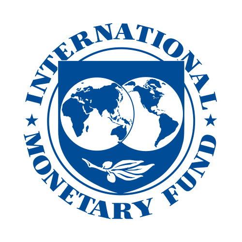
🎯 Likely QIMFIMFInternational Monetary FundEst. 22 July 1944HQ Washington, D.C.191 members (191st: Liechtenstein)Publishes the World Economic Outlook cuts India's FY 2026-27 growth forecast to 6.4%
- Down 0.1 percentage point (10 bps) to 6.4% in the World Economic Outlook.
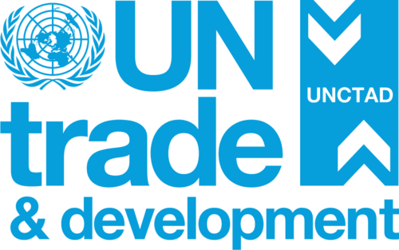
🎯 Likely QUNCTADUNCTADUN Conference on Trade and DevelopmentEst. 1964HQ GenevaPublishes the World Investment Report: India's FDI inflows up 44% to $39 billion in 2025
- From the World Investment Report 2026 by UNCTAD.
- India rises two places to 11th largest FDI recipient.
- Global FDI up 6% to $1.6 trillion.
MoSPI: Prayagraj and Patna have the highest unemployment among million-plus cities
- Report "Labour Market Dynamics in Million-plus Cities", from PLFSPLFSPeriodic Labour Force SurveyConducted by NSO, MoSPIMeasures employment and unemployment data (Jan–Dec 2025).
- 46 cities; average unemployment 6.8%.
- Highest (>20%): Prayagraj, Patna · Lowest (<2.5%): Ahmedabad, Kolkata.
Small savings rates unchanged for Q2 FY 2026-27
- PPF, SCSS, KVP, NSC etc. unchanged for 1 July – 30 September 2026 — 9th consecutive quarter.
- Notified quarterly by the Department of Economic Affairs, Ministry of Finance.
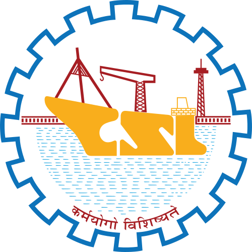
Government sells 5.04% of Cochin Shipyard
- Through an Offer for Sale; government stake falls from 67.92% to 62.87%.
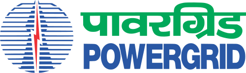
Power Grid gets ₹4,700 crore green loan from JBICJBICJapan Bank for International CooperationJapanese government policy bankHQ Tokyo
- 80 billion yen (~₹4,700 crore) from Japan Bank for International Cooperation.
- For the Khavda–Nagpur HVDC line: Khavda Renewable Energy Park (Gujarat) → Nagpur (Maharashtra).
3Government Schemes
🎯 Likely QPM-SETU expanded to all 200 ITI clusters
- 4th National Steering Committee (chair: MSDE Secretary Debashree Mukherjee) moves PM-SETU from pilot to all 200 ITI clusters.
- Strategic Investment Plans worth ₹1,237.58 crore for five clusters in Odisha, Gujarat and Telangana.
- First State with an industry partnership: Andhra Pradesh. First approved company: AM/NS India (with NAMTECH, Visakhapatnam ITI cluster).
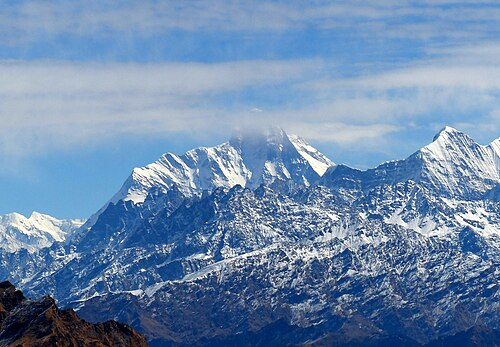
🎯 Likely QUttarakhand becomes India's 6th fully literate State
- Met adult literacy benchmarks under NEP 2020 and ULLAS (New India Literacy Programme).
- Fully literate States: Mizoram (1st, 98.2%), Goa, Tripura, Himachal Pradesh, Sikkim, Uttarakhand.
- ULLAS: 2022–27; non-literate adults 15+; target 5 crore learners (~1 crore a year); vision "Jan Jan Saakshar Bharat".
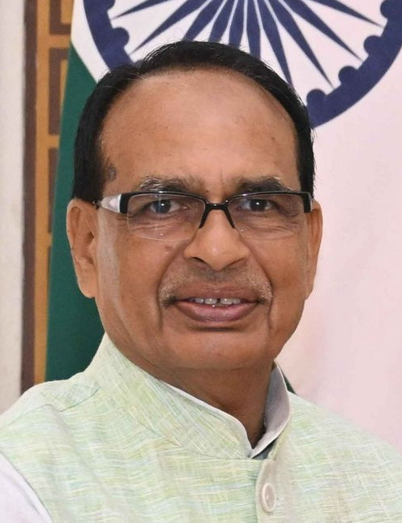
PRAGATI — regenerative agriculture initiative
- PRAGATI = Promoting Regenerative Agriculture Through Agri-Entrepreneurship Initiative; launched by Shivraj Singh Chouhan.
- 20,000 agri-entrepreneurs, 20 lakh smallholder farmers, in 8 States.
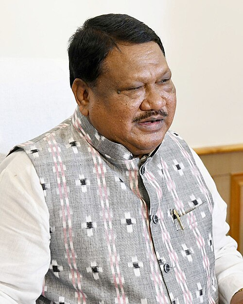
TribeX — first digital learning platform for tribal arts and culture
- Launched by Tribal Affairs Minister Jual Oram.
- Five UGC-recognised one-year hybrid PG Diplomas with Sampurnanand Sanskrit University, Varanasi.
4States & Infrastructure
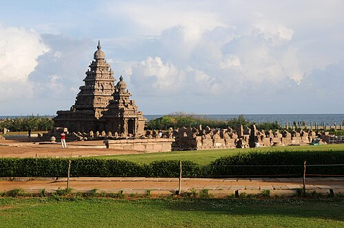
🎯 Likely QTamil NaduTamil NaduFormed 1 November 1956Capital ChennaiCM C. Joseph VijayGovernor Rajendra Vishwanath ArlekarTiger Reserves Kalakad Mundanthurai, Anamalai, Mudumalai, Sathyamangalam, Srivilliputhur Megamalai — fastest-growing merchandise exporting State (FY 2025-26)
- Exports US$59.3 billion, up 13.7%.
- Largest exporting district: Jamnagar (Gujarat); 2nd: Kanchipuram (TN).
ADBADBAsian Development BankEst. 19 December 1966HQ Manila, Philippines69 members (69th: Israel)Publishes the Asian Development Outlook approves $230 million for Chennai's water and sanitation
- US$230 million (~₹1,920 crore); aligned with AMRUT 2.0 and the Urban Challenge Fund.
Kamarajar PortKamarajar PortAlso called Ennore PortCoromandel Coast, ChennaiIndia's first port that is a public company — India's 2nd major port with an 18-metre draft
- After Visakhapatnam; can now handle fully laden Capesize vessels.
- Capital Dredging Phase VI, ~₹440 crore.
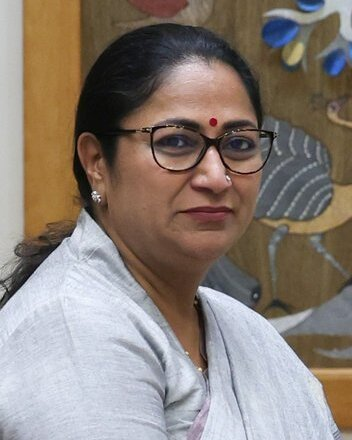
Delhi launches ₹8,300 crore "Clean Air, Healthy Delhi"
- Announced by CM Rekha Gupta; financial and technical support from the World BankWorld BankEst. 1944 (Bretton Woods)HQ Washington, D.C.189 members (189th: Nauru)Lending arm: IBRD.
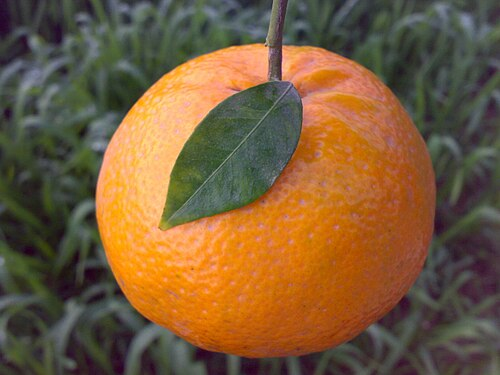
🎯 Likely QGI tags — Sirsa Kinnow (Haryana) and Jalbhara Sweet (West BengalWest BengalFormed 15 August 1947Capital KolkataCM Suvendu AdhikariGovernor R N RaviTiger Reserves Sundarbans, Buxa)
- Sirsa Kinnow: Haryana's first GI-tagged fruit and first exclusive GI product; granted by the GI Registry under DPIITDPIITDepartment for Promotion of Industry and Internal TradeMinistry of Commerce and IndustryGI Registry works under it.
- Jalbhara (Jalbhora Sandesh) from Chandannagar, Hooghly — 220+ years old.
5Appointments
🏦 BankingMahesh Pai — MD & CEO, South Indian BankSouth Indian BankFounded 1929HQ Thrissur, Kerala, from 1 October 2026
- RBI-approved, 3-year term; succeeds P. R. Seshadri.
🏦 BankingN.S. Vishwanathan re-appointed non-executive chairman of Axis BankAxis BankFormerly UTI BankFounded 3 December 1993HQ Mumbai
- 27 October 2026 – 26 October 2029; former RBIRBIReserve Bank of IndiaEst. 1 April 1935 (RBI Act 1934)Nationalised 1949HQ Mumbai Deputy Governor.
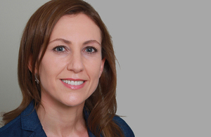
🎯 Likely QSilvana Tenreyro — IMFIMFInternational Monetary FundEst. 22 July 1944HQ Washington, D.C.191 members (191st: Liechtenstein)Publishes the World Economic Outlook Chief Economist
- Appointed by the IMF.
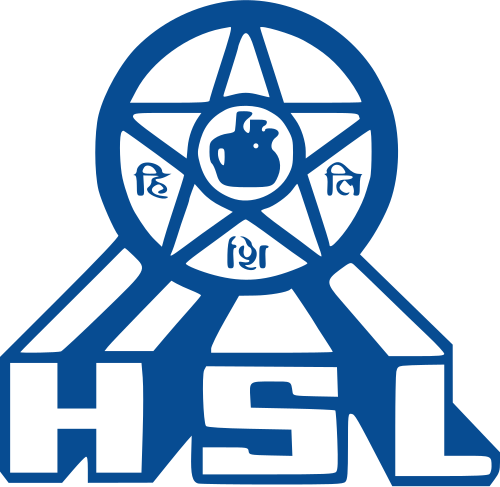
Rear Admiral C. Raghuram — CMD, Hindustan ShipyardHindustan ShipyardEst. 1941HQ VisakhapatnamMinistry of DefenceMiniratna Category-I Ltd
- Succeeds Captain Ganti Venkateswarlu (additional charge since January 2026).
Sanjeev Jain — India's next Ambassador to North KoreaNorth KoreaCapital PyongyangCurrency Won
- Currently Ambassador to Cabo Verde; succeeds Aliawati Longkumer.
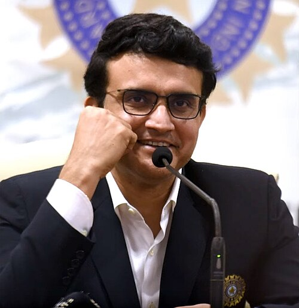
Sourav Ganguly — Brand Ambassador of InsuranceDekho
- Campaign: "Khul Kar Khelo" for insurance advisors.
6Self-test
Answer out loud first, then click to check. Re-test the ones you missed tomorrow.
Under RB-IOS 2026, maximum compensation for consequential loss?
₹30 lakh (plus up to ₹3 lakh for time, expenses, harassment)
What is RDCL, and whose stake is SBI buying?
RMBS Development Company Ltd — NHB's 10% (NHB 39% → 29%)
Which bank got an IFSCA licence for an IBU at GIFT City?
Punjab & Sind Bank
First foreign insurer to own 100% of its Indian venture?
Aviva (buying 26% from Dabur Invest Corp)
ADB vs IMF growth forecasts for India, FY 2026-27?
ADB 6.6%, IMF 6.4%
India's FDI inflows in 2025 and its global rank (UNCTAD)?
$39 billion (+44%), 11th
Highest and lowest unemployment among million-plus cities?
Highest: Prayagraj, Patna · Lowest: Ahmedabad, Kolkata
For how many consecutive quarters are small savings rates unchanged?
9
Power Grid's JBIC green loan funds which project?
Khavda–Nagpur HVDC
PM-SETU: total outlay and number of ITIs?
₹60,000 crore; 1,000 ITIs (200 hubs + 800 spokes)
First company approved under PM-SETU?
ArcelorMittal Nippon Steel India (AM/NS India)
6th fully literate State, and the first?
Uttarakhand; Mizoram was first (98.2%)
Expand PRAGATI.
Promoting Regenerative Agriculture Through Agri-Entrepreneurship Initiative
Fastest-growing merchandise exporting State in FY26?
Tamil Nadu — $59.3 bn, +13.7%
Which ports have an 18-metre draft?
Visakhapatnam (1st) and Kamarajar/Ennore (2nd)
Haryana's first GI-tagged fruit?
Sirsa Kinnow
New MD & CEO of South Indian Bank?
Mahesh Pai (from 1 Oct 2026)
New IMF Chief Economist?
Silvana Tenreyro
⚡ Rapid Revision
- RB-IOS 2026 (from 1 Jul): no dispute cap; ₹30 lakh loss + ₹3 lakh harassment.
- SBI buys NHB's 10% of RDCL (RMBS). P&SB: IBU at GIFT City. Aviva → 100% (FDI cap now 100%).
- Growth FY27: ADB 6.6% · IMF 6.4%. FDI 2025: $39 bn, +44%, India 11th (UNCTAD WIR).
- MoSPI PLFS cities: avg 6.8%; Prayagraj/Patna worst, Ahmedabad/Kolkata best.
- Small savings unchanged 9th quarter. Cochin Shipyard OFS 5.04% → govt 62.87%.
- Power Grid: ¥80 bn JBIC green loan, Khavda–Nagpur HVDC.
- PM-SETU: ₹60,000 cr, 200 hubs + 800 spokes, now all 200 clusters; AP first, AM/NS first company.
- Uttarakhand = 6th fully literate (ULLAS). PRAGATI: 20,000 agri-entrepreneurs, 20 lakh farmers. TribeX: Jual Oram.
- TN fastest-growing exporter ($59.3 bn). Kamarajar (Ennore) 18 m draft, 2nd after Vizag.
- GI: Sirsa Kinnow (Haryana's 1st fruit), Jalbhara Sweet (Chandannagar). Delhi "Clean Air, Healthy Delhi" ₹8,300 cr.
- Appointments: Mahesh Pai (SIB) · N.S. Vishwanathan (Axis chair) · Silvana Tenreyro (IMF) · C. Raghuram (HSL) · Sanjeev Jain (N. Korea) · Ganguly (InsuranceDekho).
End of July 2026 · Class 4